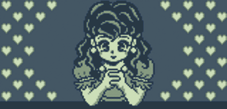
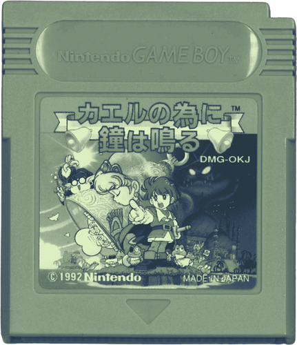

Kaeru No Tame Ni Kane Wa Naru

Written 05/29/26
I played Kaeru no Tame ni Kane wa Naru (カエルの為に鐘は鳴る) about a month ago and I struggled to find my notes, so I'll apologize in advance if this comes across as surface level.
I would suggest Kaeru no Tame ni Kane wa Naru to anyone. It is a good early puzzle adventure game, and it's one of those "beloved by early game developers" games that will prop up randomly in Smash Bros or interviews. I like getting to play these kinds of games since they feel like they provide context. It makes sense that this game
Kaeru no Tame ni Kane wa Naru is easy to pick up and is infinitely charming. It made me "teehee" and "haha" a handful of times! It also looks incredible and uses it's limitations well.

Gameplay
In the beginning I was shocked at how seamless the gameplay felt. For the first hour, Kaeru no Tame ni Kane wa Naru feels "comfortable". There are no jagged edges to slow you down, and progress is smooth.
As the game progresses, some of the final dungeons do show their age. Being weighed down and trapped in water due to numerous enemies stunning you is never fun.
The economy of the game is also a bit strange. There is no reason for the powers to be consumables with how cheap they are. Putting prices to the transformation tools only wastes the player's time, and that heavily sticks out in a game like Kaeru no Tame ni Kane wa Naru.
Kaeru no Tame ni Kane wa Naru respects the player's time. They offer numerous shortcuts and will even fade to black and bring you to the next area, so you don't have to run back and forth. In the grand scheme of things, the transformation consumables is a minor point, but it is a negative of the game.
Besides some annoyances, the gameplay was engaging and cute. The puzzles were not anything special, but they did add texture to the gameplay.
I really enjoyed the mix of perspectives. Both views were pleasant to look at, but they also did an excellent job at segmenting the game.
Princesses
It is not lost on me that so far all of my writings here have large segments dedicated to misogyny. I feel a bit self-conscious writing out this next part, so please let me clarify. I am not deeply upset with Kaeru no Tame ni Kane wa Naru. I respect games and I want to discuss them at full length; social issues often fall into the mix because nothing exists in a vacuum. It is not shocking that Kaeru no Tame ni Kane wa Naru doesn't treat women the best, that's not why I'm bringing this up.
Women in Kaeru no Tame ni Kane wa Naru fill typical archetypes. Their only roles are housewives, receptionists, or literal playboy bunnies. Tiramisu is a quintessential archetype of this era. A foreign entity has taken the female political figurehead of the land; you have to save her. Despite the conflict being vaguely political (yes, this reading too into things, but I'm having fun), oftentimes this conflict is more centered on romance.
Kaeru no Tame ni Kane wa Naru does something remarkably interesting though Tiramisu wasn't captured. She disguised herself as Mandola and started orchestrating the plot to benefit her kingdom. Mandola has been an adversary figure throughout the game, but in the end, you learn that she was a roadblock to Richard and the Prince of Sable (the player) because she wanted to draw them away from harm.
If we only viewed media through the lens of tropes, we could call this a feminist character arc, but that's giving it all a bit too much credit. She is a highlight in the story, and all though this twist is predictable, it was a good plot beat. It shapes Tiramisu into a charming and iconic character.
What's interesting though is that this small development changes the bases of her archetype. She is not the Princess whisked away by an evil foreign reptile at the beginning of the game; she's taken away by another political force at the end.
![An in game screenshot from Kaeru no Tame ni Kane wa Naru. The game is a gameboy game with a pixel art style. The gameplay has blue and red filters applied over it (rather than the default gameboy black and white). The bottom of the screen has the players tool bar with their heath, coin count, and currently equiped weapon. The current game scene takes place in a mostly empty room. There are two snake statues on the top right and left. There are gaurds slightly covered by a textbox. Tiramisu is slightly above the textbox, she is currently speaking. The textbox reads 'Polnareff! What are you asking?!'.](../../assets/article-specific/KNTNKWN-tirmisu_quote_1.png)
In the game's ending, Tiramisu is given away by her father figure to the player. He believes that this must be done in case of further attacks on the kingdom. A strong man needs to be around (and the player needs to get their reward, don't they?). Tiramisu never voices any interest in either Prince. Her last line in the game was her reacting in shock to being given away.
Kaeru no Tame ni Kane wa Naru is centered around the relationship and competition between the two Princes; Tiramisu is the final goal. Despite being in direct contact with them throughout the plot, Richard and the player never form an attachment to her.
They don't detest her; she's more "villain of the week" tier, but they never have a true moment of connection. There's a moment where the player is knocked out. As he awakens, he imagines Tiramisu above him. As he wakes up more, he realizes it is Mandola and reacts in horror. This scene feels like a stereotypical "romcom" moment. Normally this would be the moment where the Prince is tested to see if he loves Tiramisu for who she is, but that's not what happens, because what Tiramisu wants doesn't matter.
A foreign political figure came into the kingdom and left with a bride.
Kaeru no Tame ni Kane wa Naru honestly had a perfect set up for the Princes to grow closer and put aside their childish games. They are much more engaged with each other rather than the Princess, and the game could have had a cute friendship-focused ending. This is just me rambling, though.